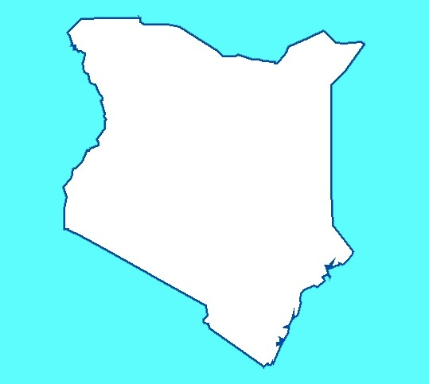

L'Afrique est composée de 49 pays avec Madagascar et de 54 si on compte tous les archipels.
Elle présente une grande diversité de climats :d'équatorial au centre à tempéré chaud au Nord
et en Afrique australe.A la forêt tropicale humide succèdent les étendues herbeuses des savanes humides,
puis sèches et épineuses. S'étendent ensuite au Nord la bande désertique du Sahara et au Sud,
les déserts du Namib et du Kalahari
A
Hymne national:
Dieu sauve l'Afrique/L'Appel de l'Afrique du Sud
Hymne national:
Le Serment
Hymne national:
En avant, Angola
B
Hymne national:
L'Aube Nouvelle

Hymne national:
Béni soit cette patrie noble
Hymne national:
L'Hymne de la Victoire
Hymne national:
Burundi aimé
C
Hymne national:
Chant de Ralliement
Hymne national:
Chant de la Liberté
Hymne national:
La Renaissance
Hymne national:
L'Union des îles
Hymne national:
La Congolaise

Hymne national:
Debout Congolais
Hymne national:
L'Abidjanaise
D
Hymne national:
Djibouti
E
Hymne national:
Ma patrie, ma patrie, ma patrie
Hymne national:
Érythrée, Érythrée, Érythrée
Hymne national:
Marche vers l'avant, chère Mère Éthiopie
G
Hymne national:
La Concorde
Hymne national:
Pour la Gambie Notre Patrie
Hymne national:
Dieu Bénisse Notre Patrie le Ghana
Hymne national:
C'est à notre patrie bien-aimée
Hymne national:
Liberté
Hymne national:
Marchons en foulant le chemin de notre immense joie
K
Hymne national:
Ô Dieu de toute la création
L
Hymne national:
Lesotho, pays de nos ancêtres
Hymne national:
Tous Salut, Salut Liberia
Hymne national:
Libye, Libye, Libye
M
Hymne national:
Ô, Notre chère patrie
Hymne national:
Hymne national:
Pour l'Afrique et pour toi, Mali
Hymne national:
Hymne national
Hymne national:
Mère Patrie
Hymne national:
Chant religieux national
Hymne national:
Patrie aimée
N
Hymne national:
Namibie, pays des courageux
Hymne national:
La Nigérienne
Hymne national:
Levez-vous Oh Compatriotes, Obéissez à l'appel du Nigeria
O
Hymne national:
Ô Ouganda, pays de beauté
R
Hymne national:
Beau Rwanda
S
Hymne national:
Indépendance totale

Hymne national:
Le Lion Rouge
Hymne national:
Joignez, tous Seychellois
Hymne national:
Nous T'exaltons Grandement, Royaume de la Liberté

Hymne national:
Réveille-toi, Somalie
Hymne national:
Nous sommes l'armée de Dieu et de notre terre
Hymne national:
Soudan du Sud Hourra!
Hymne national:
Oh Seigneur notre Dieu, ordonnateur des bénédictions des Swazis
T
Hymne national:
Dieu honore l'Afrique

Hymne national:
La Tchadienne
Hymne national:
Terre de nos aïeux
Hymne national:
Défenseurs de la patrie
Z
Hymne national:
Levez et chantez de la Zambie, fière et libre
Hymne national:
Montez haut le drapeau de Zimbabwe